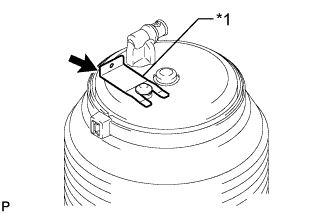
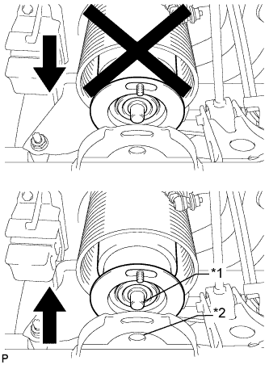

ЗАДНИЙ ПНЕВМОЦИЛИНДР (для моделей с пневматической подвеской) > УСТАНОВКА |
| 1. УСТАНОВИТЕ ЛЕВЫЙ ЗАДНИЙ ПНЕВМОЦИЛИНДР В СБОРЕ |
|  |
Установите пневмоцилиндр в сборе и закрепите его фиксатором.
| *1 | Фиксатор |
Подсоедините трубку регулировки высоты (Нажмите здесь).
|  |
При использовании опор и домкрата:
Поддомкратьте заднюю полуось в сборе так, чтобы нижняя поверхность пневмоцилиндра в сборе соприкасалась с задней полуосью в сборе, и установите штифт с нижней стороны пневмоцилиндра в сборе в отверстие в кожухе задней полуоси.
| *1 | Штырь |
| *2 | Отверстие |
 |
Временно установите гайку.
Совместите метки на заднем пневмоцилиндре с метками на кожухе задней полуоси.
| *a | Метка |
Снимите опоры, внимательно следя за тем, чтобы пневмоцилиндр в сборе не выдвигался при опускании автомобиля, пока он не окажется на грунте.
При использовании подъемника с раздвижными подхватами:
Опустите автомобиль настолько, чтобы шины вошли в контакт с грунтом, а затем продолжайте медленно опускать автомобиль, пока нижняя поверхность пневмоцилиндра в сборе не коснется кожуха задней полуоси.
Совместите посадочный штифт на цилиндре с отверстием в задней полуоси в сборе и установите пневмоцилиндр в сборе на кожух задней полуоси.
|
Временно установите гайку.
Совместите метки на заднем пневмоцилиндре с метками на кожухе задней полуоси.
| *a | Метка |
Опускайте подъемник, следя за тем, чтобы пневмоцилиндр в сборе не выдвигался.
Запустите двигатель и заправьте пневмоцилиндр в сборе воздухом.
Затяните гайку.
| 2. ПРОВЕРЬТЕ, НЕТ ЛИ УТЕЧКИ ВОЗДУХА |
Проверьте наличие утечек воздуха (Нажмите здесь).
| 3. ПРОВЕРЬТЕ ВЫСОТУ АВТОМОБИЛЯ |
Проверьте высоту подвески автомобиля (Нажмите здесь).